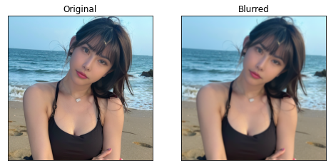
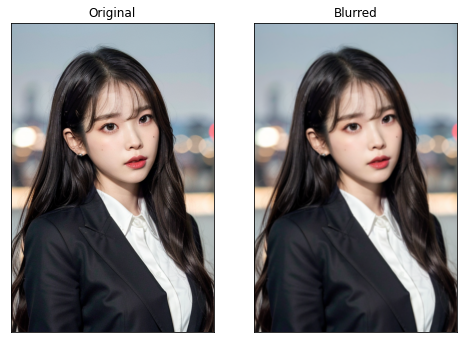
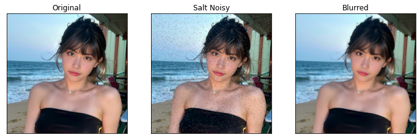
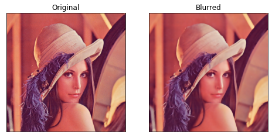

图像阈值
全局简单阈值
对于图像里的每个像素，应用相同的阈值，如果像素值小于阈值，则将其设置为0，否者设置为最大值。使用函数cv2.threshold(src, thresh, maxval, type, dst)，src是原图像，必须是单通道图像(灰度)，type表示阈值类型，所有简单的阈值类型为：
- cv2.THRESH_BINARY：小于阈值置
0，大于阈值置为最大值maxval - cv2.THRESH_BINARY_INV：与上相反
- cv2.THRESH_TRUNC：小于阈值
不变，大于阈值置为阈值thresh，即大于阈值的部分显示为白色 - cv2.THRESH_TOZERO：小于阈值置
0，大于阈值保持原色 - cv2.THRESH_TOZERO_INV：与上相反
有两个输出，第一个是使用的阈值，第二个是阈值处理后的图像。
示例如下，灰度图像黑色为0，白色为255：
img = cv2.imread('face.png',0)
ret,thresh1 = cv2.threshold(img,127,255,cv2.THRESH_BINARY)
ret,thresh2 = cv2.threshold(img,127,255,cv2.THRESH_BINARY_INV)
ret,thresh3 = cv2.threshold(img,127,255,cv2.THRESH_TRUNC)
ret,thresh4 = cv2.threshold(img,127,255,cv2.THRESH_TOZERO)
ret,thresh5 = cv2.threshold(img,127,255,cv2.THRESH_TOZERO_INV)
titles = ['Original Image','BINARY','BINARY_INV','TRUNC','TOZERO','TOZERO_INV']
images = [img, thresh1, thresh2, thresh3, thresh4, thresh5]
plt.figure(figsize=(9,6))
for i in range(6):
plt.subplot(2,3,i+1),plt.imshow(images[i],'gray')
plt.title(titles[i])
plt.xticks([]),plt.yticks([])
plt.show()
自适应阈值
使用cv2.adaptiveThreshold(src, maxValue, adaptiveMethod, thresholdType, blockSize, C, dst)实现自适应阈。thresholdType有cv2.THRESH_BINARY和cv2.THRESH_BINARY_INV两种，blockSize确定邻域大小，C是减去的常数，adaptiveMethod决定如何计算阈值，有以下两种：
- cv2.ADAPTIVE_THRESH_MEAN_C：局部邻域块均值减去常数C
- cv2.ADAPTIVE_THRESH_GAUSSIAN_C：局部邻域块高斯加权和减去常数C；
自适应阈值可以根据像素周围的区域来确定像素的阈值；亮度较高的图像区域的二值化阈值通常会较高，而亮度低的图像区域的二值化阈值则会相适应的变小；不同亮度、对比度、纹理的局部图像区域将会拥有相对应的局部二值化阈值。
示例如下：
img = cv2.imread('sudoku.png',0)
img = cv2.medianBlur(img,5)
ret,th1 = cv2.threshold(img,127,255,cv2.THRESH_BINARY)
th2 = cv2.adaptiveThreshold(img,255,cv2.ADAPTIVE_THRESH_MEAN_C, cv2.THRESH_BINARY,11,2)
th3 = cv2.adaptiveThreshold(img,255,cv2.ADAPTIVE_THRESH_GAUSSIAN_C, cv2.THRESH_BINARY,11,2)
titles = ['Original', 'Global(v = 127)','Mean', 'Gaussian']
images = [img, th1, th2, th3]
plt.figure(figsize=(8,8))
for i in range(4):
plt.subplot(2,2,i+1),plt.imshow(images[i],'gray')
plt.title(titles[i])
plt.xticks([]),plt.yticks([])
plt.show()
Otsu的二值化
在全局简单阈值中，我们使用任意选择的值作为阈值。Otsu的方法可以自动确定阈值，避免了必须选择一个值的情况。考虑仅具有两个不同图像值的图像（双峰图像），其中直方图将仅包含两个峰。一个好的阈值应该在这两个值的中间，Otsu的方法能从图像直方图中确定最佳全局阈值。
仍然使用cv2.threshold函数，将cv2.THRESH_OTSU作为额外的标志位传递到函数，阈值thresh可任意选择。
示例如下，三种情况分别是全局阈值(thresh=127)、Otsu阈值，经过高斯滤波去噪后的Otsu阈值：
img = cv2.imread('noisy.jpeg',0)
ret1,th1 = cv2.threshold(img,127,255,cv2.THRESH_BINARY)
ret2,th2 = cv2.threshold(img,0,255,cv2.THRESH_BINARY+cv2.THRESH_OTSU)
blur = cv2.GaussianBlur(img,(5,5),0)
ret3,th3 = cv2.threshold(blur,0,255,cv2.THRESH_BINARY+cv2.THRESH_OTSU)
# plot all the images and their histograms
images = [img, 0, th1,
img, 0, th2,
blur, 0, th3]
titles = ['Original Noisy Image','Histogram','Global Thresholding (v=127)',
'Original Noisy Image','Histogram',"Otsu's Thresholding",
'Gaussian filtered Image','Histogram',"Otsu's Thresholding"]
plt.figure(figsize=(9,9))
for i in range(3):
plt.subplot(3,3,i*3+1),plt.imshow(images[i*3],'gray')
plt.title(titles[i*3]), plt.xticks([]), plt.yticks([])
plt.subplot(3,3,i*3+2),plt.hist(images[i*3].ravel(),256)
plt.title(titles[i*3+1]), plt.xticks([]), plt.yticks([])
plt.subplot(3,3,i*3+3),plt.imshow(images[i*3+2],'gray')
plt.title(titles[i*3+2]), plt.xticks([]), plt.yticks([])
plt.show()

图像平滑
2D卷积（图像过滤）
可以使用各类低通滤波器(LPF)和高通滤波器(HPF)对图像进行滤波，LPF有助于消除噪声、使图像模糊等，HPF有助于在图像中寻找边缘信息。使用函数cv2.filter2D(src, ddepth, kernel, dst, anchor, delta, borderType)来将滤波核与图像进行卷积，例如，5x5的均值滤波核如下：
$$
K = \frac{1}{25}
\begin{bmatrix}
1 & 1 & 1 & 1 & 1 \\
1 & 1 & 1 & 1 & 1 \\
1 & 1 & 1 & 1 & 1 \\
1 & 1 & 1 & 1 & 1 \\
1 & 1 & 1 & 1 & 1
\end{bmatrix}
$$
使用7x7的均值滤波示例如下：
img = cv.imread('face.png')
img = cv2.cvtColor(img, cv2.COLOR_BGR2RGB)
kernel = np.ones((7,7),np.float32)/49
dst = cv.filter2D(img,-1,kernel)
plt.subplot(121),plt.imshow(img),plt.title('Original')
plt.xticks([]), plt.yticks([])
plt.subplot(122),plt.imshow(dst),plt.title('Averaging')
plt.xticks([]), plt.yticks([])
plt.show()
图像模糊（图像平滑）
通过将图像与低通滤波器进行卷积来实现图像模糊，这对于消除噪声很有用。它实际上从图像中消除了噪声和边缘等高频部分。因此此操作会使边缘模糊，OpenCV主要提供四种模糊类型：
-
均值
获取核区域下所有像素的均值，然后替换中心元素。可以通过
cv2.blur(src, ksize, dst, anchor, borderType)或cv2.boxFilter(src, ddepth, ksize, dst, anchor, normalize, borderType)完成。示例如下：img = cv2.imread('face.png') img = cv2.cvtColor(img, cv2.COLOR_BGR2RGB) blur = cv2.blur(img,(5,5)) plt.subplot(121),plt.imshow(img),plt.title('Original') plt.xticks([]), plt.yticks([]) plt.subplot(122),plt.imshow(blur),plt.title('Blurred') plt.xticks([]), plt.yticks([]) plt.show()若不想使用标准化的滤波器，可以使用
cv2.boxFilter()并且设置normalize=False。 -
高斯模糊
使用
cv2.GaussianBlur()。需要指定高斯核的宽度和高度，宽度和高度都应该为正奇整数；还需指定X和Y方向的标准差sigmaX和sigmaY，如果仅指定sigmaX，则两者相同，若两者均为零，则根据高斯核大小计算。高斯模糊对于从图像中去除高斯噪声非常有效。可通过
cv2.getGaussianKernel()创建高斯内核。修改上述代码实现高斯模糊：
blur = cv2.GaussianBlur(img,(5,5),0) -
中值模糊
将中心元素替换为和区域的中值，对于消除椒盐噪声非常有效。内核大小应该为正奇整数。示例如下：
median = cv.medianBlur(img,5)椒盐噪声就是黑白噪点，椒指黑色噪点，盐指白色噪点。
-
双边滤波
双边滤波
cv2.bilateralFilter(src, d, sigmaColor, sigmaSpace, dst, borderType)在去除噪声的同时保持边缘清晰锐利非常有效。但是该操作相较于其他滤波器速度较慢。d表示滤波时使用的每个像素邻域的直径sigmaColor表示色彩空间中滤波的标准差，该值越大，滤波器在保留边缘信息上越弱sigmaSpace表示坐标空间中滤波的标准差，该值越大，更远的颜色相近的元素会互相影响
双边滤波器在空间中也采用高斯滤波器，但是还有一个高斯滤波器，它是像素差的函数。空间的高斯函数确保仅考虑附近像素的模糊，而强度差的高斯函数确保仅考虑强度与中心像素相似的那些像素的模糊。由于边缘的像素强度变化较大，因此可以保留边缘。
blur = cv.bilateralFilter(img,9,75,75)